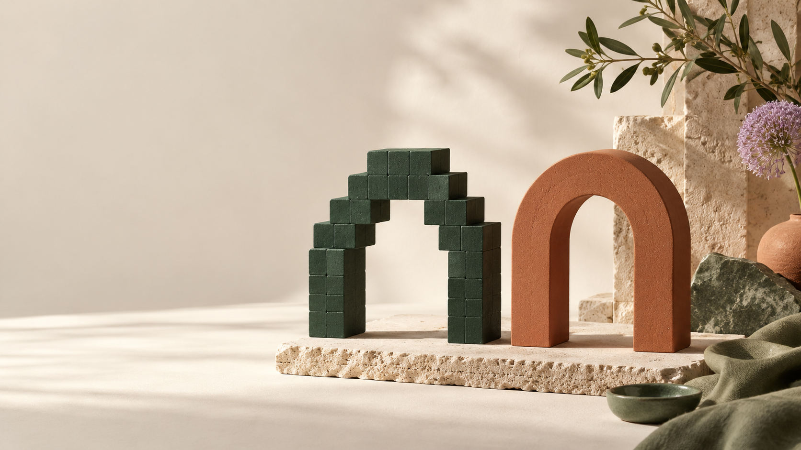

Raster graphics
Raster images contain a grid of pixels. Enlarging beyond the available resolution can reveal pixelation or blur. Photographs and detailed paintings are common uses. Examples include JPEG, PNG and GIF.
05 / DIGITAL FORMATS
Choose the format that suits the artwork and its intended size.

Raster images contain a grid of pixels. Enlarging beyond the available resolution can reveal pixelation or blur. Photographs and detailed paintings are common uses. Examples include JPEG, PNG and GIF.
Vector artwork describes shapes using mathematical paths. Pure vector shapes can be resized without pixelation, making them useful for logos, diagrams and icons. SVG is a common vector format; PDF can contain vector artwork, raster images or both.
| Feature | Raster | Vector |
|---|---|---|
| Structure | Pixels | Paths, points and shapes |
| Scaling | Limited by pixel resolution | Pure paths remain sharp when resized |
| Typical use | Photographs and digital painting | Logos, icons and illustrations |
| File size | Depends on dimensions and compression | Depends on path complexity and embedded content |
| Transparency | Supported by some formats, including PNG | Supported by formats such as SVG |
The enlarged raster illustration shows visible pixels, while the vector illustration demonstrates smooth geometric edges.
A raster image's pixel dimensions describe its actual pixel grid. PPI means pixels per inch and relates pixel dimensions to physical output size. DPI describes printer dots per inch; the terms are related in production but are not interchangeable.
For example, a 2400 × 3000 pixel image placed at 300 pixels per inch has a nominal print size of 8 × 10 inches. The calculation is pixels divided by PPI. Whether that resolution is appropriate depends on the printer, viewing distance and output. Changing the PPI label without adding pixels does not create new image detail.
| Format | Type and strengths | Important limitation |
|---|---|---|
| JPEG | Raster; useful for photographs, with adjustable lossy compression. | Repeated lossy saves can reduce quality; standard JPEG does not support transparency. |
| PNG | Raster; lossless compression and transparency, useful for screenshots and sharp flat graphics. | Can produce large files for photographic content. |
| GIF | Raster; supports simple animation and limited-colour imagery. | Limited palette; not ideal for high-quality photographs. |
| WebP | Raster; supports lossy or lossless encoding, transparency and animation. | Check the receiving tool or submission platform supports it. |
| SVG | Vector-oriented XML format for paths and shapes; suitable for scalable diagrams and logos. | May contain embedded raster images; an embedded photograph does not become resolution-independent. |
| Document container that can preserve vector artwork and contain raster images and text. | A PDF is not automatically vector-only or print-ready; inspect export settings. |
Lossy compression discards some information to reduce file size. It can be effective for photographs but may introduce visible artifacts. Lossless compression reduces file size without discarding the encoded image data. Neither label alone determines the best file: content, dimensions, settings and the intended use all matter.
Rasterisation converts vector content into pixels at a chosen resolution. Once exported as a raster-only image, enlarging it does not preserve the original vector edges. Keep the editable vector master if later resizing or editing may be needed.
Tracing creates paths from a raster reference, either manually or automatically. It can simplify a drawing into editable shapes, but it does not perfectly recover every original detail. A raster photograph does not become genuine vector artwork merely by being saved inside an SVG file.